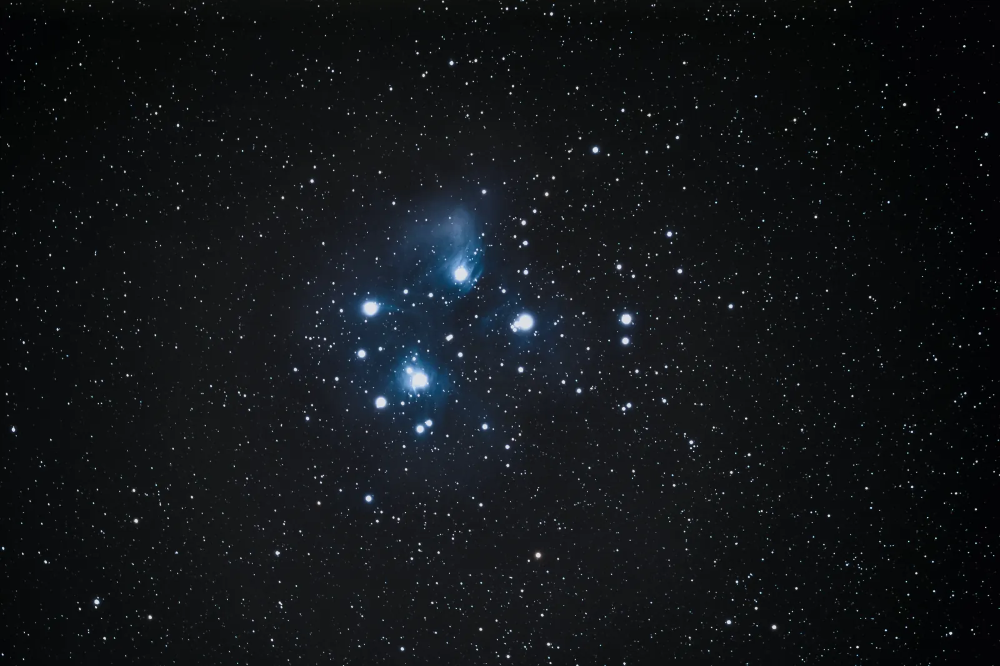

Live · computed for 54.4832° N, 3.1104° W
Sky tonight
Everything on this page is worked out from your device clock and this observatory’s coordinates — star positions, the Moon’s phase, where the planets are and how long the darkness lasts. Nothing here was written down in advance.
North at top, east at left · the rim is the horizon
Twelve hours either side of the present. The sky turns fifteen degrees an hour.
Tonight’s twilight
Twilight is measured by how far the Sun is below the horizon. Deep-sky observing needs the last of these — and at this latitude it is not always available.
| Stage | Sun below | Evening | Morning |
|---|---|---|---|
| Computing… | |||
The Moon
A bright Moon washes out everything faint, so our deep-sky sessions are scheduled around it.
Where the planets are
Positions are computed from orbital elements rather than looked up, so this table is right for the moment you loaded the page — and for whatever time you scrub the slider to.
| Planet | Right ascension | Declination | Direction | Altitude | Mag | Distance |
|---|---|---|---|---|---|---|
| Computing… | ||||||
Why the season matters here
Astronomical darkness means the Sun is more than eighteen degrees below the horizon, with no sunlight reaching even the top of the atmosphere. Above about 49 degrees of latitude there are weeks each summer when that never happens.
At Hallow Fell the gap runs from 10 May to 2 August — eighty-five nights. The Sun bottoms out around twelve degrees down at midsummer, which is nautical twilight: fine for the Moon, the planets and double stars, useless for galaxies.
The rest of the year more than makes up for it. On 19 December there are twelve hours and fifteen minutes of true dark in a single night, which is more than most of southern Europe gets at any time of year.
Telescope nights are only offered on dates that reach real darkness. If you are visiting in June, book a solar session instead — the Sun is a genuinely good target and we have the filters for it.
